<!DOCTYPE html>
<html lang="ja">
<head>
  <meta charset="UTF-8">
  <meta name="viewport" content="width=device-width, initial-scale=1.0">
  <title>エコハウステイスト診断</title>
  
  <!-- Tailwind CSS (デザインを整えるツール) を読み込み -->
  <script src="https://cdn.tailwindcss.com"></script>
  
  <!-- React を読み込み -->
  <script src="https://unpkg.com/react@18/umd/react.production.min.js" crossorigin></script>
  <script src="https://unpkg.com/react-dom@18/umd/react-dom.production.min.js" crossorigin></script>
  
  <!-- Babel (Reactのコードをブラウザ用に変換するツール) を読み込み -->
  <script src="https://unpkg.com/@babel/standalone/babel.min.js"></script>

  <style>
    /* アニメーション用のスタイル */
    @keyframes fadeIn { from { opacity: 0; } to { opacity: 1; } }
    @keyframes slideUp { from { opacity: 0; transform: translateY(10px); } to { opacity: 1; transform: translateY(0); } }
    @keyframes slideRight { from { opacity: 0; transform: translateX(-10px); } to { opacity: 1; transform: translateX(0); } }
    .animate-slide-up { animation: slideUp 0.4s ease-out forwards; }
    .animate-slide-right { animation: slideRight 0.3s ease-out forwards; }
  </style>
</head>
<body class="bg-[#ebe6dd]">
  <!-- ここにアプリが表示されます -->
  <div id="root"></div>

  <!-- ここから下がアプリのプログラム（React）です -->
  <script type="text/babel">
    const { useState } = React;

    // ==========================================
    // アイコンコンポーネント
    // ==========================================
    const ChevronLeft = ({ size = 24, className = "" }) => (
      <svg xmlns="http://www.w3.org/2000/svg" width={size} height={size} viewBox="0 0 24 24" fill="none" stroke="currentColor" strokeWidth="2" strokeLinecap="round" strokeLinejoin="round" className={className}>
        <path d="m15 18-6-6 6-6"/>
      </svg>
    );
    const RotateCcw = ({ size = 24, className = "" }) => (
      <svg xmlns="http://www.w3.org/2000/svg" width={size} height={size} viewBox="0 0 24 24" fill="none" stroke="currentColor" strokeWidth="2" strokeLinecap="round" strokeLinejoin="round" className={className}>
        <path d="M3 12a9 9 0 1 0 9-9 9.75 9.75 0 0 0-6.74 2.74L3 8"/><path d="M3 3v5h5"/>
      </svg>
    );

    // ==========================================
    // デザイン・設定データ
    // ==========================================
    const tastes = [
      { id: 'natural', name: 'ナチュラル' },
      { id: 'antique', name: 'アンティーク' },
      { id: 'industrial', name: 'インダストリアル' },
      { id: 'japanese', name: '和モダン' },
      { id: 'hotel', name: 'ホテルライク' },
      { id: 'nordic', name: 'ミッドセンチュリー' },
    ];

    // 36枚の写真をそれぞれ指定されたファイル名で読み込み、個別の解説文を設定
    const casesData = {
      natural: [
        { id: 'natural-0', image: './images/N0.jpg', title: '明るく開放的なLDK', description: '大きな窓から自然光がたっぷり入る、明るく開放的なLDK。むき出しの木の梁や柱、木目のキッチンが温もりを感じさせ、大きな観葉植物がよく似合う空間です。' },
        { id: 'natural-1', image: './images/N1.jpg', title: '自然素材が心地よいダイニング', description: '斜め張りの木材が目を引くキッチンカウンターが主役のダイニング。ルーバー扉やラタンの照明など、自然素材をふんだんに取り入れた爽やかなスタイルです。' },
        { id: 'natural-2', image: './images/N2.jpg', title: 'カフェのような居心地の良い空間', description: 'モスグリーンのタイルで仕上げたキッチンカウンターと、木板張りの下がり天井がアクセント。木目の家具とたっぷりのグリーンが調和する、カフェのような居心地の良い空間です。' },
        { id: 'natural-3', image: './images/N3.jpg', title: 'ラフで自由な土間キッチン', description: '柱や梁、白い板張りの壁など、古い建物の趣を残しつつリノベーション。土間に置かれた大きなステンレスキッチンや木のテーブルが、ラフで自由な暮らしを想像させます。' },
        { id: 'natural-4', image: './images/N4.jpg', title: '庭の緑を楽しむナチュラルな住まい', description: '白い正方形タイルで造作されたアイランドキッチンと、木の梁見せ天井のコントラストが美しいLDK。大きな窓から庭の緑を楽しめる、明るくナチュラルな住まいです。' },
        { id: 'natural-5', image: './images/N5.jpg', title: '光が通り抜けるサニタリー', description: 'ガラスの建具で仕切られた、光が通り抜ける開放的なサニタリースペース。コンクリート土間に自転車や観葉植物を無造作に置き、インドアグリーンのある暮らしを満喫できます。' }
      ],
      antique: [
        { id: 'antique-0', image: './images/A0.jpg', title: '落ち着いた色合いのアンティーク空間', description: 'クラシックな柄の壁紙とレンガ調の柱が目を引くリビング。ダークグリーンのキッチンカウンターや天井の木目など、落ち着いた色合いでまとめたアンティーク空間です。' },
        { id: 'antique-1', image: './images/A1.jpg', title: '特別なディスプレイスペース', description: '重厚な木製キャビネットやアンティークのフロアランプが存在感を放つ、ショップのような一角。お気に入りの小物を並べて楽しむ、特別なディスプレイスペースです。' },
        { id: 'antique-2', image: './images/A2.jpg', title: 'レトロなタイルが彩るダイニング', description: 'むき出しのコンクリート梁と、使い込まれた大きな木製の食器棚が絶妙にマッチ。レトロなタイル張りのキッチンとグリーンが彩りを添える、居心地の良いダイニングです。' },
        { id: 'antique-3', image: './images/A3.jpg', title: 'アトリエのようなワークスペース', description: '年月を経た味わい深い木のデスクや小引き出しを並べた、アトリエのようなワークスペース。静かな時間が流れ、読書や趣味に没頭できる大人のための隠れ家です。' },
        { id: 'antique-4', image: './images/A4.jpg', title: 'ヨーロッパの伝統を感じるリビング', description: '重厚な木製キャビネットや猫脚のテーブル、シャンデリアがヨーロッパの伝統を感じさせるリビング。ベルベット調のソファや絨毯が、エレガントな雰囲気をさらに高めます。' },
        { id: 'antique-5', image: './images/A5.jpg', title: '優雅で明るい洋館風リビング', description: '吹き抜けの開放感とアーチ状の開口部が美しい、洋館を思わせるリビング。パーケットフローリングに大きな柱時計やクラシカルなソファが馴染む、優雅で明るい空間です。' }
      ],
      industrial: [
        { id: 'industrial-0', image: './images/I0.jpg', title: '洗練された無骨なLDK', description: 'むき出しの黒い鉄骨とヘリンボーンの床が印象的な広々としたLDK。ダークウッドのキッチンカウンターやブルーのソファが、無骨さの中に洗練された雰囲気をプラスしています。' },
        { id: 'industrial-1', image: './images/I1.jpg', title: '男前なインダストリアルリビング', description: 'ラフなコンクリートむき出しの壁と天井が目を引くリビング。黒いダクトレール照明やインダストリアルなフロアランプ、ヴィンテージ調の小物が男前な空間を演出しています。' },
        { id: 'industrial-2', image: './images/I2.jpg', title: '無機質とグリーンの美しい対比', description: '古材を使ったキッチンカウンターと、無機質なコンクリート壁のコントラストが美しい空間。天井から吊るしたたくさんのグリーンが、クールな部屋に温かみと彩りを添えています。' },
        { id: 'industrial-3', image: './images/I3.jpg', title: 'スタイリッシュなハードテイスト', description: 'ステンレス製の大きなアイランドキッチンが存在感を放つLDK。天井のむき出し配管やスツールなど、工場や倉庫のようなハードな要素をスタイリッシュにまとめています。' },
        { id: 'industrial-4', image: './images/I4.jpg', title: 'ブルックリンスタイルのリビング', description: 'モルタル調の壁と、真鍮のような輝きを放つ大型のペンダントライトが特徴的なリビング。重厚なレザーソファや黒枠の室内窓が、ブルックリンスタイルのようなかっこよさを引き立てます。' },
        { id: 'industrial-5', image: './images/I5.jpg', title: '自由でクリエイティブな小上がり空間', description: 'コンクリートの天井や壁をそのまま活かした、天井が高く開放的なリビング。一段上がった木造りの小上がりスペースや無骨なスチール家具が、自由でクリエイティブな暮らしを感じさせます。' }
      ],
      japanese: [
        { id: 'japanese-0', image: './images/J0.jpg', title: '和の趣とモダンが交差するダイニング', description: '木の温もりを感じる柱と板張りの天井が印象的なダイニング。障子風の窓やグレーのアクセントウォールが、和の趣とモダンな雰囲気を絶妙にミックスしています。' },
        { id: 'japanese-1', image: './images/J1.jpg', title: 'ノスタルジックな和のキッチン', description: '細やかなモザイクタイルとステンレスの組み合わせがスタイリッシュなキッチン。使い込まれた木の扉やアンティークな食器棚が、ノスタルジックな和の空気を醸し出します。' },
        { id: 'japanese-2', image: './images/J2.jpg', title: '開放感あふれる古民家風LDK', description: '古民家の立派な梁や屋根裏をそのまま活かした、開放感あふれるLDK。モザイクタイルのカウンターやインダストリアルな照明が、和の空間に新しい息吹をもたらしています。' },
        { id: 'japanese-3', image: './images/J3.jpg', title: '和の静けさを感じるルーバー窓の空間', description: '美しい木目の勾配天井と、光を優しく取り込むルーバー窓が特徴的な空間。造作のキッチンカウンターや室内の一角に設けた緑が、和の静けさを感じさせます。' },
        { id: 'japanese-4', image: './images/J4.jpg', title: '縁側からの光が心地よいリビング', description: '伝統的な日本家屋の造りを残しつつ、モダンな囲炉裏テーブルを中央に配置。縁側から差し込む光が心地よい、広々とした畳と板間のリビングです。' },
        { id: 'japanese-5', image: './images/J5.jpg', title: '趣深い土間風の和空間', description: '土間の名残を感じる広いスペースに、モルタル仕上げのモダンなキッチンを新設。奥の和室や坪庭の緑を眺めながら食事を楽しめる、趣深い和空間です。' }
      ],
      hotel: [
        { id: 'hotel-0', image: './images/H0.jpg', title: 'リゾートホテルのような安らぎの空間', description: '木目の天井や柱と、石目調のアクセントウォールが調和する上質なリビング。自然素材の温かみと洗練されたデザインが融合した、リゾートホテルのような安らぎの空間です。' },
        { id: 'hotel-1', image: './images/H1.jpg', title: '高級ホテルのラウンジ風モダンリビング', description: 'グレーを基調としたシックで都会的なリビング。大理石調の壁面パネルやゆったりとした大型ソファを配置し、高級ホテルのラウンジを思わせるモダンな空間に仕上げました。' },
        { id: 'hotel-2', image: './images/H2.jpg', title: '華やかで洗練されたLDK', description: '黒いフレームのガラスパーテーションが空間をスタイリッシュに仕切るLDK。印象的なデザインのペンダントライトや間接照明が、華やかで洗練された雰囲気を演出します。' },
        { id: 'hotel-3', image: './images/H3.jpg', title: '大人の隠れ家ホテルのようなリビング', description: 'レンガ調の壁やコンクリートの質感が目を引く、重厚感のある空間。レザーのラウンジチェアを配し、ヴィンテージテイストを取り入れた大人の隠れ家ホテルのようなリビングです。' },
        { id: 'hotel-4', image: './images/H4.jpg', title: 'くつろぎの時間を過ごすベッドルーム', description: '落ち着いたグレージュのアクセントクロスと間接照明が、心地よい眠りを誘うベッドルーム。アートや小ぶりのソファを設え、くつろぎの時間を過ごすプライベートルームに。' },
        { id: 'hotel-5', image: './images/H5.jpg', title: '白とグレーの開放的なリビング', description: '吹き抜けからたっぷりと光が降り注ぐ、白とグレーで統一された開放的なリビング。石目調のテレビボード壁面やバーチカルブラインドが、空間をよりシャープに魅せています。' }
      ],
      nordic: [
        { id: 'nordic-0', image: './images/M0.jpg', title: 'ポップで楽しいミッドセンチュリー', description: '吹き抜けの開放的なリビングに、鮮やかなブルーのソファとイエローのチェアが映える空間。グリーンのアクセントウォールや木製の手すりが、ポップで楽しいミッドセンチュリーの世界観を演出しています。' },
        { id: 'nordic-1', image: './images/M1.jpg', title: '和と洋が調和したリビングダイニング', description: '美しい木目の板張り天井とパーケットフローリングが、空間全体に温かみを与えます。青緑色のソファや和紙のペンダントライトなど、和と洋が調和した落ち着きのあるリビングダイニングです。' },
        { id: 'nordic-2', image: './images/M2.jpg', title: 'ゆったり過ごせる大人の上質空間', description: '壁一面に設けられた造作の本棚と、暖炉が印象的な大人のリビング。コーデュロイの大きなソファや籐のラウンジチェアに身を委ね、ゆったりとした時間を過ごせる上質な空間です。' },
        { id: 'nordic-3', image: './images/M3.jpg', title: '建築美を感じる芸術的な空間', description: 'ダイナミックな板張り天井と、温かみのあるレンガ壁が特徴的な建築美を感じる空間。大きな窓から見える緑と、個性的なデザインのチェアが、芸術的な雰囲気を醸し出しています。' },
        { id: 'nordic-4', image: './images/M4.jpg', title: 'レトロモダンなレンガ壁のリビング', description: '外の景色を大胆に取り込む大きな窓と、重厚なレンガ壁のコントラストが美しいリビング。ヴィンテージ感のあるレザーソファや幾何学模様のラグが、レトロモダンな雰囲気を強調します。' },
        { id: 'nordic-5', image: './images/M5.jpg', title: 'レトロで温かいカフェ風ダイニング', description: '壁の腰壁や造作キャビネットなど、ふんだんに使われた木の質感が心地よいダイニング。特徴的なペンダントライトやたくさんの観葉植物が、レトロで温かいカフェのような空間を作っています。' }
      ]
    };

    // ==========================================
    // 共通コンポーネント
    // ==========================================
    const Button = ({ children, onClick, variant = 'primary', className = '' }) => {
      // rounded-full を追加して角を丸くしました
      const base = "font-bold py-3 px-6 rounded-full transition-all flex items-center justify-center gap-2";
      const variants = {
        primary: "bg-orange-400 text-white shadow-[0_4px_0_0_#c2410c] active:shadow-[0_0px_0_0_#c2410c] active:translate-y-1",
        secondary: "bg-white text-gray-700 shadow-[0_4px_0_0_#e5e7eb] border-2 border-gray-100 active:shadow-[0_0px_0_0_#e5e7eb] active:translate-y-1",
      };
      return (
        <button onClick={onClick} className={`${base} ${variants[variant]} ${className}`}>
          {children}
        </button>
      );
    };

    // ==========================================
    // メインアプリコンポーネント
    // ==========================================
    function App() {
      const [step, setStep] = useState(1);
      const [selectedTaste, setSelectedTaste] = useState(null);
      const [selectedCase, setSelectedCase] = useState(null);

      const renderStep1 = () => (
        <div className="animate-slide-up">
          <div className="mb-6 text-center">
            <h2 className="text-xl font-bold text-gray-800">どんな雰囲気が好きですか？</h2>
          </div>
          <div className="grid grid-cols-2 gap-4 md:gap-6">
            {tastes.map(taste => (
              <button
                key={taste.id}
                onClick={() => {
                  setSelectedTaste(taste);
                  setStep(2);
                  window.scrollTo(0, 0);
                }}
                className="flex flex-col items-center w-full group"
              >
                <div className="w-full p-2 rounded-2xl border-2 bg-white border-gray-200 shadow-[0_4px_0_0_#e5e7eb] group-active:shadow-[0_0px_0_0_transparent] group-active:translate-y-[4px] transition-all mb-2">
                  
                </div>
                <span className="font-bold text-sm md:text-base text-gray-800 group-active:translate-y-[4px] transition-all">{taste.name}</span>
              </button>
            ))}
          </div>
        </div>
      );

      const renderStep2 = () => (
        <div className="animate-slide-right pb-6">
          <div className="mb-6 text-center">
            <h2 className="text-lg font-bold text-gray-800">
              {selectedTaste.name}の事例
            </h2>
          </div>
          <p className="text-center text-sm text-gray-500 mb-6">お好きな写真を選んでください</p>
          
          <div className="grid grid-cols-2 gap-4">
            {casesData[selectedTaste.id].map((caseItem, index) => (
              <button
                key={caseItem.id}
                onClick={() => {
                  setSelectedCase(caseItem);
                  setStep(3);
                  window.scrollTo(0, 0);
                }}
                // 背景の白枠、余白(p-2)、枠線などを元に戻しました
                className="bg-white p-2 rounded-2xl border-2 border-gray-100 shadow-[0_4px_0_0_#e5e7eb] active:shadow-[0_0px_0_0_#e5e7eb] active:translate-y-[4px] transition-all flex flex-col group overflow-hidden"
              >
                {/* 画像自身にも角丸(rounded-xl)を戻しました */}
                
              </button>
            ))}
          </div>

          <button 
            onClick={() => setStep(1)} 
            className="w-full mt-8 bg-[#dfd6cb] hover:bg-[#d4cbbd] active:bg-[#cabbab] text-gray-800 font-bold py-3.5 px-6 rounded-full transition-colors flex items-center justify-center gap-2 shadow-sm"
          >
            <span className="text-lg leading-none -mt-[2px]">◀</span> テイスト選択に戻る
          </button>
        </div>
      );

      const renderStep3 = () => (
        <div className="animate-slide-up flex flex-col items-center pt-2 pb-6">
          <div className="bg-white w-full rounded-3xl shadow-[0_4px_15px_rgba(0,0,0,0.05)] overflow-hidden mb-8 border border-gray-100">
            
            
            <div className="p-6 md:p-8 text-left">
              <h3 className="text-[1.1rem] md:text-xl font-bold text-[#5c8a22] mb-3">
                {selectedCase.title}
              </h3>
              
              <hr className="border-t-[1.5px] border-dashed border-gray-300 mb-4" />
              
              <p className="text-gray-700 leading-relaxed text-[15px] md:text-base">
                {selectedCase.description}
              </p>
            </div>
          </div>

          <button 
            onClick={() => setStep(2)} 
            className="w-full bg-[#dfd6cb] hover:bg-[#d4cbbd] active:bg-[#cabbab] text-gray-800 font-bold py-3.5 px-6 rounded-full transition-colors flex items-center justify-center gap-2 shadow-sm"
          >
            <span className="text-lg leading-none -mt-[2px]">◀</span> 事例選択に戻る
          </button>
        </div>
      );

      return (
        <div className="min-h-screen font-sans flex justify-center">
          <div className="w-full max-w-md bg-[#f5f0e6] min-h-screen shadow-lg flex flex-col relative overflow-hidden">
            
            {/* ヘッダー部分 */}
            <header className="pt-4 pb-3 px-4 flex items-center justify-center gap-3 text-white bg-emerald-600 shadow-md mb-6 relative z-10 border-b border-emerald-700">
              <div className="h-20 w-20 flex items-center justify-center shrink-0">
                 
              </div>
              <h1 className="text-[17px] sm:text-lg font-extrabold tracking-wider">エコハウステイスト診断</h1>
            </header>

            <main className="flex-1 px-5 pb-10">
              {step === 1 && renderStep1()}
              {step === 2 && renderStep2()}
              {step === 3 && renderStep3()}
            </main>
          </div>
        </div>
      );
    }

    // アプリを画面に表示
    const root = ReactDOM.createRoot(document.getElementById('root'));
    root.render(<App />);
  </script>
</body>
</html>
